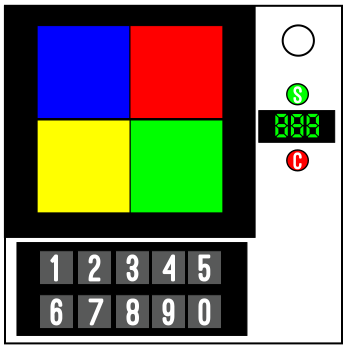

モジュール詳細：キャッチフレーズ
見たままを答えればいいよ。
- モジュールは、テレビゲーム番組「Catchphrase」を再現している。
- モジュールを解除するには、隠された数字を特定し、それらを乗算して入力する必要がある。
- 英字はデコイなので、無視して構わない。
- 「S」を押して回答を送信し、「C」で入力を消去する。
- 間違った入力をするとミスが記録される。
- 数字は4つの色のついたパネルによって隠されている。パネルには6種類の色があり、同じ色のパネルがある場合もある。
- 数字を表示するには、適切なタイミングで正しいパネルを押す。
- 全てのパネルを開かなくても回答を送信することが出来る。
- 間違ったパネルを押したり、間違ったタイミングで押すと、ミスが記録される。
- 押すタイミングを特定するには、まずシリアルナンバーの全ての英字をアルファベット上の位置の数字に変換する(A=1,B=2…)。
- 結果を合計し、点灯したインジケーターの数を加算する。
- 数字が10を超える場合は、10未満になるまで繰り返し10を引く。結果の数字は以下の表の左側に使用する。
|
カウントダウンタイマーの1の桁がこの数字のときにパネルを押す。 |
| n枚目のパネル |
1枚目 |
2枚目 |
3枚目 |
4枚目 |
| 計算結果：0 |
5 |
1 |
3 |
7 |
| 計算結果：1 |
2 |
8 |
6 |
4 |
| 計算結果：2 |
0 |
9 |
5 |
2 |
| 計算結果：3 |
9 |
3 |
4 |
8 |
| 計算結果：4 |
6 |
2 |
7 |
5 |
| 計算結果：5 |
1 |
5 |
2 |
9 |
| 計算結果：6 |
8 |
7 |
1 |
3 |
| 計算結果：7 |
4 |
0 |
8 |
6 |
| 計算結果：8 |
3 |
4 |
0 |
2 |
| 計算結果：9 |
7 |
6 |
9 |
1 |
- 以下のルールを使用し、パネルを押す順序を決定する。4枚目のパネルは残ったパネルを示す。
1枚目
- 全てのパネルの色が異なっている場合、赤のパネルを押す。ない場合は左上のパネルを押す。
- それ以外の場合、少なくとも1つの空のポートプレートがある場合、青のパネルを押す。ない場合は右下のパネルを押す。
- それ以外の場合、緑のパネルがある場合、紫のパネルを押す。ない場合は左下のパネルを押す。
- それ以外の場合、バッテリーが4つより多い場合、緑のパネルを押す。ない場合は右上のパネルを押す。
- それ以外の場合、黄色のパネルを押す。ない場合はオレンジのパネルを押す。両方ない場合は、左上を押す。
2枚目
- 1枚目のパネルが赤または緑だった場合、青のパネルを押す。ない場合は右上のパネルを押す。既に右上が押されている場合は右下のパネルを押す。
- それ以外の場合、1枚目のパネルが左上だった場合、オレンジのパネルを押す。オレンジがない場合は、左下のパネルを押す。
- それ以外の場合、1枚目のパネルが紫または右下だった場合、黄のパネルを押す。黄がない場合は右上のパネルを押す。既に右上が押されている場合は左上のパネルを押す。
- それ以外の場合、緑のパネルを押す。緑がない場合は赤のパネルを押す。赤がない場合は右下のパネルを押す。既に右下が押されている場合は左上のパネルを押す。
3枚目
- 残りの二つのパネルが上部にあり同じ色の場合、左上のパネルを押す。
- それ以外の場合、残りの二つのパネルが左側にあり色が異なる場合、左下のパネルを押す。
- それ以外の場合、残りの二つのパネルが下部にある場合、右下のパネルを押す。
- それ以外の場合、残りの二つのパネルが右側にある場合、右上のパネルを押す。
- それ以外の場合、以下の順で最初に該当するパネルを押す。赤／左上／青／左下／緑／右下／オレンジ／右上／黄色／紫